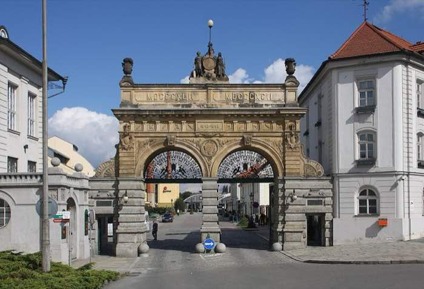
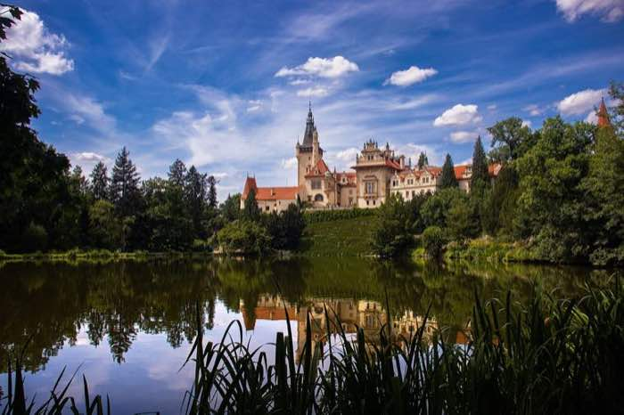
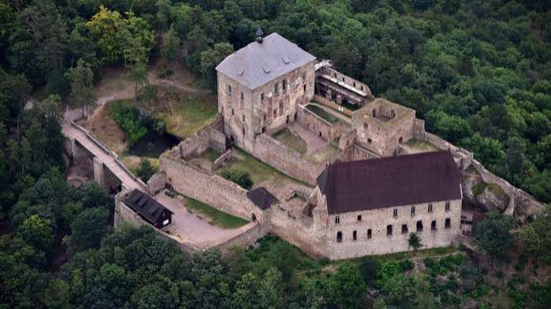
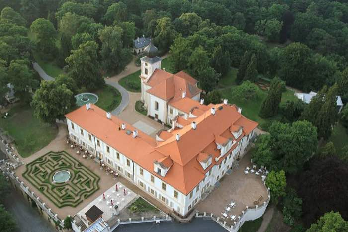
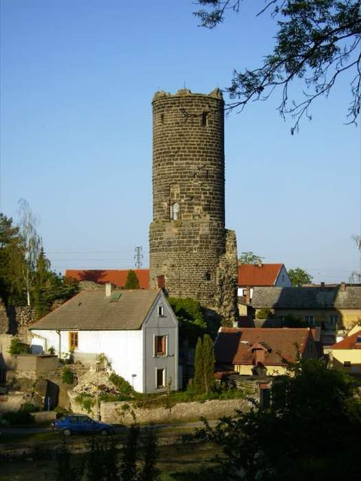
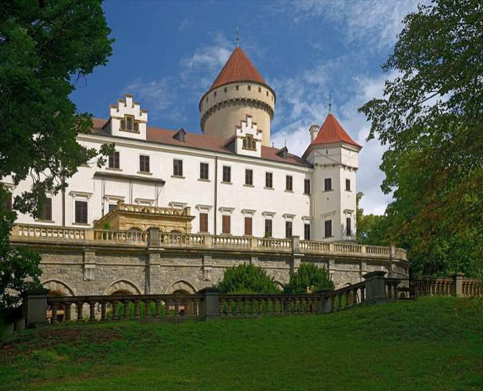
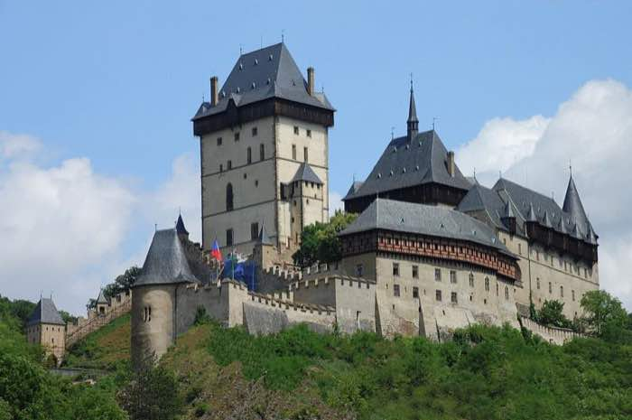
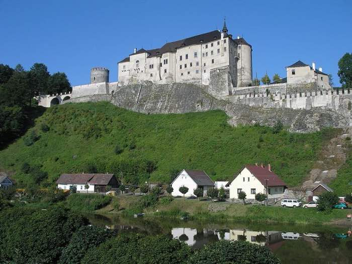
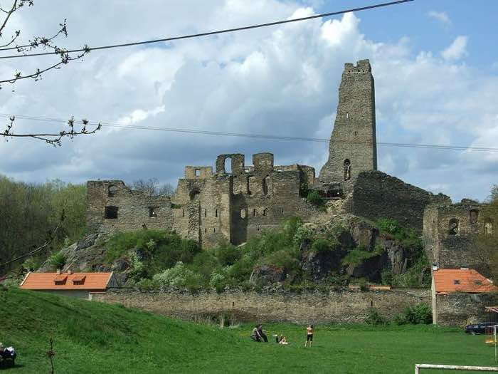

25.–31. augusta 2026 · východzí bod: doma, Praha-východ
25–31 August 2026 · starting from home, Prague-East
Týždeň s bratom
A week with my brother
Dve rodiny, štyri deti od 3 do 9 rokov. Program je poskladaný podľa
predpovede počasia — mokré dni sú vnútri, suché vonku, a medzi výletmi sú naozaj
voľné dni. Všetky časy sú od domu, teda s obchádzkou Prahy.
Posledný voľný deň je pondelok 31. 8.: v utorok ide malý prvýkrát
do školy.
Two families, four kids aged 3 to 9. The week is built around the
forecast — wet days go indoors, dry days outdoors, and there are genuinely empty days
between the trips. Every drive time is measured from home,
which means going around Prague. The last free day is Monday 31 August:
on Tuesday, the little one starts school for the first time.
UtTuerozjazdwarm-up
StWedPlzeň
ŠtThuPrůhonice
PiFrioddychrest
SoSatvoľnoopen
NeSunTočník
PoMondo školyschool eve
UtorokTuesday2522 °C72 °Fbez dažďano rain
DomaAt home
Rozjazd
Warm-up
Lístky na zajtrajší pivovar sú kúpené, vrátane detských. Zostávajú dve
veci: rezervovať stôl pre osem na 14:00 v Na Spilce a vstupenky na Točník
na nedeľu. Zvyšok týždňa nepotrebuje nič vopred.
Tomorrow's brewery tickets are bought, kids included. Two things left:
book a table for eight at 14:00 at Na Spilce and the Sunday tickets for
Točník. Nothing else this week needs booking ahead.

Tmv23 / CC BY-SA 3.0
StredaWednesday2620 °C68 °F2 mm dažďa0.08 in rain
Celý deň pod strechouIndoors all day
Plzeň — pivovar a Techmania
Plzeň — brewery and Techmania
Odchod z domu — 134 km, cez juh Pražského okruhu na D5
Leave home — 83 mi, southern Prague ring road onto the D5
Techmania — deti aj dospelí, expozície a planetárium
Techmania — kids and adults together, exhibits and planetarium
Presun k pivovaru — 4 km, asi 10 minút
Drive to the brewery — 2.5 mi, about 10 minutes
Prehliadka Prazdroja — všetci, lístky máme aj pre deti
Prazdroj brewery tour — everyone, we have tickets for the kids too
Koniec prehliadky
Tour ends
Obed — Na Spilce, priamo v areáli pivovaru
Lunch — Na Spilce, inside the brewery grounds
Voľne: späť do Techmanie (do 17:00) alebo domov
Optional: back to Techmania (until 17:00) or head home
Doma
Home
Prečo dnes: najchladnejší a najmokrejší deň týždňa —
a jediný program, ktorý je celý pod strechou. Dážď tak nič nepokazí.
Vezmite deťom mikiny: prehliadka vedie cez pivovarské pivnice, kde je
okolo 8 °C aj keď je vonku teplo. Techmania pred prehliadkou, nie po nej:
po dvoch hodinách státia budú deti unavené a Na Spilce je päť krokov od východu —
žiadny presun s vyčerpanou trojročnou.
Obed — Na Spilce, U Prazdroje 7. Priamo v areáli,
pár krokov od východu z prehliadky. Detský kútik so stoličkami a detským menu,
550 miest, takže osem ľudí bez rezervácie zvládnu — ale v stredu na obed radšej
zavolaj. Od decembra 2025 je v Michelin Guide aj Gault & Millau, takže to nie je
turistická jedáleň. Alternatíva, ak vám nevadí 10 minút pešo: Šenk Na Parkánu
(Veleslavínova 59/4, 94 % z 672 recenzií, tretia najlepšia v Plzni) — lepšia kuchyňa,
horšia logistika s unavenými deťmi.
Why today: the coldest, wettest day of the week —
and the only plan that is entirely under a roof, so the rain costs us nothing.
Bring sweaters for the kids: the tour goes through the brewing cellars,
which sit around 46 °F even on a warm day. Techmania before the tour, not after:
after two hours on their feet the kids will be done, and Na Spilce is five steps
from the exit — no trek with an exhausted three-year-old.
Lunch — Na Spilce, U Prazdroje 7. On the brewery
grounds, a few steps from where the tour ends. Kids' corner with high chairs and a
children's menu, 550 seats, so eight of us would fit without booking — but call
anyway for a Wednesday lunch. Listed in the Michelin Guide and Gault & Millau
since December 2025, so it is not a tourist canteen. Alternative if you don't mind
a 10-minute walk: Šenk Na Parkánu (Veleslavínova 59/4, 94 % from 672 reviews,
third-best in Plzeň) — better kitchen, worse logistics with tired kids.

Rostislav Souček / CC BY-SA 4.0
ŠtvrtokThursday2729 °C84 °F3 % dažďa3 % rain
Vonku, ale zavčasuOutdoors, but early
Průhonický park
Průhonice Park
Odchod — 18 km, necelá polhodina
Leave — 11 mi, just under half an hour
Vstup do parku (otvorené 7:00–19:00)
Into the park (open 7:00–19:00)
Okruh okolo rybníkov — tieň, voda, priestor na beh
Loop around the ponds — shade, water, room to run
Obed a odchod, kým nepríde najväčšia horúčava
Lunch and out before the worst of the heat
Doma, poobede oddych
Home, quiet afternoon
Prečo dnes: jediný deň v týždni s takmer nulovou
pravdepodobnosťou dažďa. Prečo ráno: popoludní bude 29 °C. V parku je tieň
a voda, ale s trojročným je lepšie byť do obeda hotový. Pozor na zámenu: chcete
Průhonický park, nie Dendrologickú záhradu o kus ďalej. A je to najbližší
cieľ z celého týždňa — z domu sú to necelé tri štvrťhodiny aj s parkovaním.
Why today: the only day this week with a near-zero
chance of rain. Why the morning: the afternoon hits 29 °C. The park has shade
and water, but with a three-year-old it is better to be done by lunch. Don't confuse
it with the Dendrological Garden nearby — you want Průhonice Park. It is also
the closest destination of the week: well under an hour door to gate, parking
included.
PiatokFriday2829 °C84 °F17 mm · búrky0.7 in · storms
Nulový programNothing planned
Oddych
Rest
Nikam sa nejde. Sedemnásť milimetrov dažďa a búrky — aj keby bolo
29 °C. Deň doma: dlhé raňajky, fotky a historky z Ameriky, hry. Ak treba deti
vybiť, je to ideálny deň na domácu misiu Ghost Wolves.
We go nowhere. Three quarters of an inch of rain and thunderstorms, even
at 84 °F. A day at home: a long breakfast, photos and stories from America, games.
If the kids need burning off, it is the perfect day for an indoor Ghost Wolves
mission.
Prečo to takto: toto je ten oddychový deň, ktorý si
chcel — a počasie ho vybralo za teba. Predtým dva výlety, potom voľná sobota.
Why it sits here: this is the rest day you asked
for, and the weather picked it for you. Two trips before it, an open Saturday
after.
SobotaSaturday2925 °C77 °Fprehánkyshowers
Bez záväzkuNo commitment
Voľno — a poistka
Open — and the fallback
Deň, na ktorý sa nič nekupuje vopred. Ak je vonku dobre,
hrad Jenštejn: devätnásť kilometrov, zrúcanina s dvadsaťdvametrovou
vyhliadkovou vežou priamo uprostred dediny. Rodinné vstupné 70 Kč, hodina až
dve programu, dá sa zrušiť za pochodu, keď príde prehánka.
A day with nothing bought in advance. If the weather holds,
Jenštejn castle: twelve miles away, a ruin with a seventy-two-foot
lookout tower in the middle of the village. Family ticket 70 CZK, one to two
hours, and easy to abandon the moment a shower rolls in.
Prečo práve v sobotu: Jenštejn má otvorené len cez
víkend, 10:00–17:00. Poistka: ak štvrtok z nejakého dôvodu vypadne, presúvajú
sa sem Průhonice — preto tento deň zostáva inak prázdny.
Why Saturday specifically: Jenštejn only opens at
weekends, 10:00–17:00. The fallback: if Thursday falls through, Průhonice
moves here — which is why the day is otherwise kept empty.

Wolkenkratzer / CC BY-SA 4.0
NedeľaSunday3027 °C81 °Fsuchodry
Hrad · vstup zdarmaCastle · free entry
Točník a Žebrák
Točník and Žebrák
Odchod — 84 km, cez juh okruhu na D5
Leave — 52 mi, southern ring road onto the D5
Točník — voľná prehliadka, deti chodia vlastným tempom
Točník — self-guided, the kids set the pace
Piknik pod hradbami
Picnic below the walls
Žebrák — susedná zrúcanina, tam sa smie liezť
Žebrák — the ruin next door, climbing allowed
Doma
Home
Prečo dnes: 30. augusta je na Točníku vstup na
prehliadkový okruh zdarma — a v pondelok je hrad zatvorený, takže iný deň to
nevyjde. Háčik: vstupenky na deň volného vstupu treba rezervovať online
vopred, kapacita je obmedzená. Toto je jediná vec z celého týždňa, ktorá sa dá
premeškať.
Why today: on 30 August the tour circuit at Točník
is free — and the castle is closed on Mondays, so no other day works. The catch:
free-entry tickets must be reserved online in advance and capacity is limited. This
is the one thing all week that can actually be missed.
Ľahké dopoludnie okolo domu — záhrada, bicykle, nič, čo si vyžaduje
auto. Poobede aktovka, oblečenie, skorá večera a skoré spanie.
An easy morning around the house — the garden, bikes, nothing that
needs the car. In the afternoon: school bag, clothes, early dinner, early bed.
Prečo tu nie je výlet: zajtra ráno ide malý
prvýkrát do školy. To je jediný pevný bod celého týždňa a všetko ostatné sa mu
prispôsobuje.
Why there is no trip here: tomorrow morning the little one
starts school for the first time. That is the one fixed point of the week, and
everything else bends around it.
Rozhodnutie
The decision
Deväť hradov, meraných od domu
Nine castles, measured from home
Kritérium nie je, ktorý hrad je najkrajší, ale ktorý znesie
trojročné dieťa. To znamená tri veci: krátka cesta od auta k bráne, žiadna hodina ticha
so sprievodcom, a priestor, kde sa smie behať. Prúžok vpravo je čas jazdy z domu —
a od nás vyzerá rebríček úplne inak než z Prahy.
The test is not which castle is the finest, but which one a
three-year-old can survive. That means three things: a short walk from the car to the
gate, no hour of enforced silence behind a guide, and space where running is allowed.
The bar on the right is the drive from home — and from here the ranking looks
nothing like it does from Prague.
Wolkenkratzer / CC BY-SA 4.0
Točník + Žebrák
Voľba na nedeľuThe Sunday pick
bez sprievodcu
self-guided
30. 8. zdarma
free on 30 Aug
inak 180 Kč · deti 6–17: 50 Kč
otherwise 180 CZK · kids 6–17: 50 CZK
do 5 rokov zdarma
under 5 free
pondelok zatvorené
closed Mondays
Dva hrady vedľa seba. Chodíte sami s tlačenou mapkou — žiadne „buďte
ticho, pán sprievodca hovorí". Žebrák je zrúcanina, kde sa deti môžu vyblázniť,
Točník má výhľad a hradby pre dospelých. Presne ten typ hradu, aký chce vidieť
návšteva z Ameriky.
Two castles side by side. You walk it yourself with a printed map —
no "quiet please, the guide is speaking". Žebrák is a ruin where the kids can go
wild; Točník has the walls and the view for the adults. Exactly the kind of castle
a visitor from America comes to see.
Háčik: vstupenky na deň volného vstupu sa musia
rezervovať online vopred a kapacita je obmedzená.
The catch: free-entry tickets must be reserved
online in advance, and capacity is limited.
65 min84 km52 mi
jazda z domudrive from home

Zdeněk Fiedler / CC BY-SA 3.0
Zámek Loučeň
Najlepší pre detiBest for the kids
12 labyrintov a bludísk
12 mazes and labyrinths
park 200 Kč · znížené 150 Kč
park 200 CZK · reduced 150 CZK
otvorené celý rok
open all year
kostýmované detské prehliadky
costumed children's tours
Zámocký park s dvanástimi labyrintmi a bludiskami — európsky unikát
a zďaleka najsilnejší detský magnet zo zoznamu. Bludiská sa chodia vlastným
tempom, bez sprievodcu a bez hodiniek. Na severovýchod, takže sa Praha vôbec
neobchádza.
A chateau park holding twelve mazes and labyrinths — unique in Europe
and by far the strongest kid-magnet on the list. You wander them at your own pace,
no guide and no clock. It lies north-east, so Prague never has to be crossed.
Kedy ho vymeniť za Točník: ak chceš optimalizovať
deň pre deti a nie pre hrad. Točník má navrch len tým, že je to naozajstný hrad a
v nedeľu je zadarmo.
When to swap it in for Točník: if you would
rather optimise the day for the children than for the castle. Točník wins only on
being a real castle — and free that Sunday.
56 min56 km35 mi
jazda z domudrive from home

Petr Vilgus / CC BY 2.5
Jenštejn
Poistka na sobotuThe Saturday fallback
rodinné 70 Kč
family ticket 70 CZK
dospelý 40 Kč · deti 30 Kč
adult 40 CZK · child 30 CZK
do 4 rokov zdarma
under 4 free
len So–Ne 10:00–17:00
Sat–Sun only, 10:00–17:00
Najbližší hrad zo všetkých — zrúcanina s dvadsaťdvametrovou vežou
uprostred dediny, s prekvapivo dobrým výhľadom do celého Polabia. Za sedemdesiat
korún pre celú rodinu je to najlacnejší výlet týždňa.
The closest castle of the lot — a ruin with a seventy-two-foot tower
in the middle of the village and a surprisingly good view across the whole Elbe
lowland. At seventy crowns for the entire family it is the cheapest outing of the
week.
Háčik: je to hodina až dve programu, nie celý
deň. A cez týždeň je zatvorené — mimoriadnu prehliadku treba dohodnúť deň vopred.
The catch: it fills one to two hours, not a whole
day. And it is shut on weekdays — an off-hours visit has to be arranged a day
ahead.
31 min19 km12 mi
jazda z domudrive from home

Ввласенко / CC BY-SA 3.0
Konopiště
Blízko, ale oslabenéClose, but weakened
park zdarma
park free
zámok len so sprievodcom
chateau guided only
detská prehliadka na rezerváciu
children's tour on request
Najbližší skutočný zámok. Park a záhrada sú zadarmo, streľnica
Františka Ferdinanda stále stojí, detskú prehliadku s upraveným výkladom sa dá
rezervovať.
The closest proper chateau. Park and gardens are free, Franz
Ferdinand's shooting range still stands, and a children's tour with a simplified
commentary can be booked.
Háčik: medvede v zámockej priekope — hlavný dôvod,
prečo sem ľudia vozili deti — skončili koncom roka 2024; posledný, Jiří, odišiel do
ZOO Ostrava. Bez nich zostáva interiérová prehliadka so sprievodcom, čo je pre
trojročné dieťa najhorší možný formát.
The catch: the bears in the castle moat — the
whole reason people used to bring children here — were retired at the end of 2024;
the last one, Jiří, went to Ostrava Zoo. Without them you are left with a guided
indoor tour, the worst possible format for a three-year-old.
40 min42 km26 mi
jazda z domudrive from home

Arkadiusz Zarzecki / CC BY-SA 3.0
Karlštejn
NeodporúčamNot recommended
25–30 min výstup od parkoviska
25–30 min climb from the car park
55 min so sprievodcom
55 min guided
žiadny voľný okruh
no self-guided option
Z Prahy je to najbližší hrad — od nás už nie. Pol
hodiny výstupu do kopca cez ulicu plnú stánkov, potom hodina, kde treba stáť
a mlčať, a nulová možnosť prejsť si hrad vlastným tempom. Zaplatíte skoro hodinu
jazdy za formát, ktorý trojročné dieťa nezvládne.
From Prague it is the nearest castle; from here it no
longer is. Half an hour uphill through a street of souvenir stalls, then an hour of
standing quietly, and no way to walk the place at your own pace. You pay nearly an
hour of driving for a format a three-year-old cannot handle.
58 min56 km35 mi
jazda z domudrive from home

Flipper77 / CC BY 3.0 cz
Český Šternberk
Pekný, zlý formátLovely, wrong format
len so sprievodcom
guided only
hrad nad Sázavou
castle above the Sázava
pomalé cesty
slow back roads
Vzdušnou čiarou blízko, ale hodina po okreskách. Hrad na
skale nad Sázavou je nádherný — a prístupný výhradne v sprievode. Ten istý problém
ako Karlštejn, len bez výstupu do kopca.
Close as the crow flies, but an hour on back roads. The
castle on its rock above the Sázava is magnificent — and accessible only with a
guide. The same problem as Karlštejn, minus the climb.
60 min48 km30 mi
jazda z domudrive from home

Aktron / CC BY-SA 3.0
Okoř
Vypadol kvôli vzdialenostiCut by geography
voľne prístupné
freely accessible
zdarma
free
bez kočíka
no pushchairs
Z Prahy je to legendárny výlet na dvadsať minút. Od nás je to hodina cez celé mesto — a Jenštejn ponúka to isté za tretinu času.
Padol na geografii, nie na kvalite.
From Prague it is the legendary twenty-minute outing.
From here it is an hour straight across the city — and Jenštejn offers the same
thing at a third of the driving. It lost on geography, not on quality.
51 min60 km37 mi
jazda z domudrive from home
Wector.sector / CC BY-SA 4.0
Křivoklát
Krásny, ale ďalekoBeautiful, but far
okruh od 20 min bez sprievodcu
self-guided circuit from 20 min
140 Kč · deti 40 Kč
140 CZK · kids 40 CZK
dlhé okruhy 60–100 min
longer tours 60–100 min
pondelok zatvorené
closed Mondays
Najzachovalejší hrad zo zoznamu — kaplnka, hladomorňa,
rytiersky sál. Z Prahy by bol vážnym kandidátom. Od nás je to hodina a štvrť,
a to najlepšie z neho je aj tak zamknuté v hodinových prehliadkach so sprievodcom.
S trojročným reálne stihnete len dvadsaťminútový okruh na hradby.
The best-preserved castle on the list — chapel, oubliette,
knights' hall. From Prague it would be a serious contender. From here it is an hour and a quarter, and the best of it is locked inside hour-long guided tours
anyway. With a three-year-old you realistically manage only the twenty-minute
ramparts circuit.
78 min95 km59 mi
jazda z domudrive from home
Jiří Strašek / CC BY-SA 4.0
Švihov
Zaslúži si vlastný deňDeserves its own day
okruh Popelka 30 min · 140 Kč
Cinderella circuit 30 min · 140 CZK
loďka okolo hradieb · 100 Kč
rowboat around the walls · 100 CZK
bez sprievodcu
self-guided
Obsahovo najlepší detský hrad v Čechách: vodný hrad, kde
sa natáčali Tri oriešky pre Popolušku, detský okruh s hádankami bez sprievodcu
a plavba na loďke okolo hradieb. A tri a pol hodiny v aute za jeden deň. Poznač si
ho na jeseň, nie na tento týždeň.
On content alone, the best castle for children in
Bohemia: a moated castle where Three Wishes for Cinderella was filmed, a
self-guided children's circuit full of riddles, and a rowboat trip around the
walls. Also three and a half hours in the car in one day. Note it down for the
autumn, not for this week.
108 min152 km94 mi
jazda z domudrive from home
Akcia
Action
Dve rezervácie, zvyšok počká
Two bookings, the rest can wait
Celý týždeň drží na dvoch telefonátoch. Ostatné miesta sa
platia na mieste a nedajú sa vypredať.
The whole week hangs on two phone calls. Everywhere else you
pay at the gate and cannot be sold out.
Na Spilce — stôl pre 8 na stredu 14:00 · dnes
Na Spilce — table for 8, Wednesday 14:00 · today
+420 377 062 755 · U Prazdroje 7, priamo v areáli · detský kútik,
detské menu, stoličky, ohrev jedla · otvorené 11:00–22:00 · Michelin Guide + Gault & Millau
+420 377 062 755 · U Prazdroje 7, on the brewery grounds · kids' corner,
children's menu, high chairs, food warming · open 11:00–22:00 · Michelin Guide + Gault & Millau
Točník — nedeľa 30. 8. · dnes
Točník — Sunday 30 Aug · today
online rezervácia na deň volného vstupu · kapacita obmedzená ·
tocnik@npu.cz · +420 778 761 741 · Ut–Ne 9:00–18:00
online reservation for the free-entry day · limited capacity ·
tocnik@npu.cz · +420 778 761 741 · Tue–Sun 9:00–18:00
Techmania — netreba rezervovať
Techmania — no booking needed
streda 8:30–17:00 · rodinné 1 040 Kč (4 osoby) · jednotlivec 280 Kč ·
do 3 rokov zdarma
Wednesday 8:30–17:00 · family 1,040 CZK (4 people) · individual 280 CZK ·
under 3 free
Průhonický park — netreba rezervovať
Průhonice Park — no booking needed
denne 7:00–19:00 · rodinné 430 Kč · dospelý 160 Kč ·
deti do 6 rokov zdarma
daily 7:00–19:00 · family 430 CZK · adult 160 CZK ·
under 6 free
Jenštejn — netreba rezervovať
Jenštejn — no booking needed
sobota a nedeľa 10:00–17:00 · rodinné 70 Kč · posledný vstup 16:30 ·
mimo víkendu po dohode deň vopred: 605 214 441
Saturday and Sunday 10:00–17:00 · family 70 CZK · last entry 16:30 ·
weekdays by arrangement a day ahead: 605 214 441